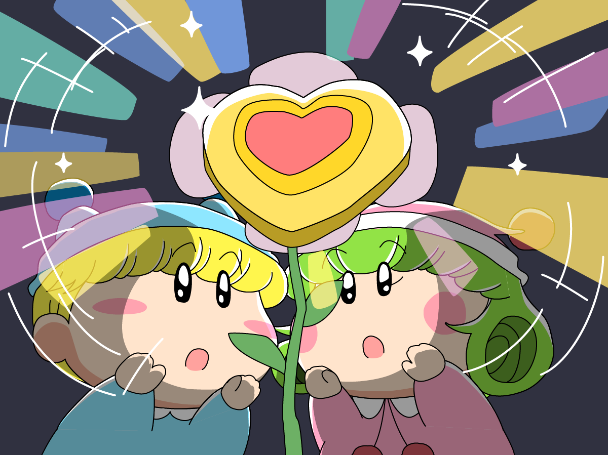
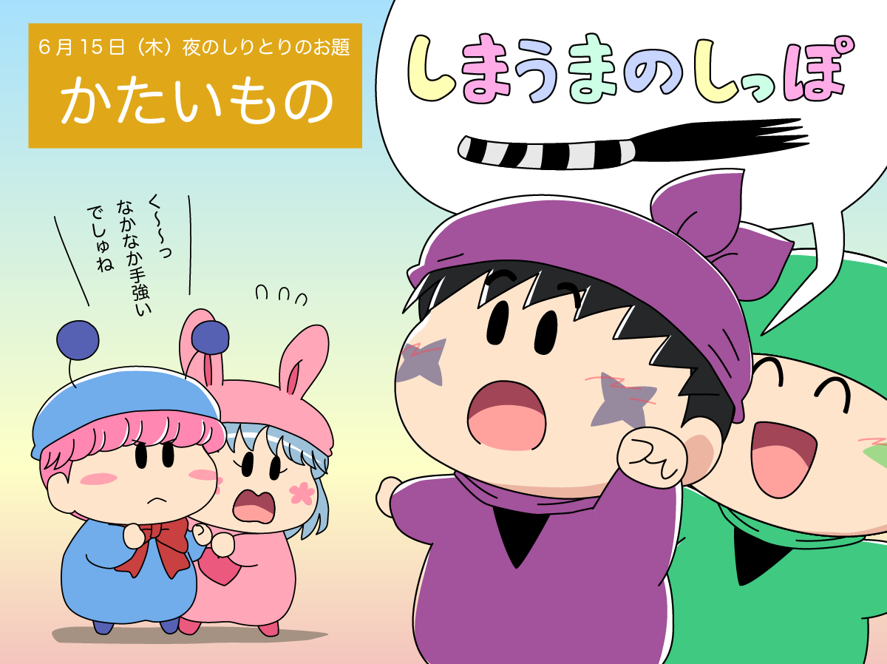

品川プリンスホテルのクラブeXで行われた≒JOY☆FAIRY LIVE STAGE「ミルモでポン！」について、手短ではありますが記事にまとめます。
まず舞台のスケジュールは以下の通りで、合計９回の舞台でした。
- 6/14(水) 19:00〜
- 6/15(木) 14:00〜、19:00〜
- 6/16(金) 14:00〜、19:00〜
- 6/17(土) 13:00〜、19:00〜
- 6/18(日) 13:00〜、19:00〜
千穐楽である6/18(日) 19:00の回は、オンラインでの生配信も行われました。
ちなみに私は6/15(木) 19:00の回に参加しました〜。
会場のクラブeXは、円形の舞台を囲うように客席がセッティングされた、面白い構造ですね。
座る席によっては演者さんの仕草がよく見えたり（逆に一部は見えなかったり）、またすぐ横の通路を演者さんが駆け抜けて行ったりと、とても臨場感を満喫できる会場だったと思います。
ここからは私の感想を書いていきます。
最初に結論を書いてしまうと、当初思っていた100倍以上の満足度がありました！
超失礼ながら、アイドルのイベントなので「きっとコンサートがメインで舞台の方は20分程度のオマケなんだろうなぁ」と私は思っていました。
が、その期待は良い方向に裏切られました（とっても濃い舞台が1時間以上！）
まず何よりも、ミルモという作品の再現度がとても高かったですね。
天野香乃愛さんによるミルモの声や仕草があまりにもアニメのミルモ（小桜エツコさんの声）とそっくりでいきなり度肝を抜かされ・・。
他の妖精役も、私たちミルモファンがじっくり見てもセリフや仕草にまったく違和感を感じなかったです。
ニアジョイの皆さんは年齢的にミルモ初見だったはずなのに、忙しい中一生懸命ミルモを見て研究いただいたことがミルモファンとしてはたまらなくうれしかったです。
特に、アニメではセリフが一切ないムーンを演じる山田杏佳さんは大変だっただろうなぁ。
舞台ではムーンが言葉少なめにしゃべりますが、実際にムーンがしゃべったらまさにこんな感じ！と納得の演技でした。
ちなみに妖精たちのキャストは以下の通りです（敬称略）
- ミルモ：天野香乃愛
- リルム：村山結香
- ヤシチ：江角怜音
- ムルモ：市原愛弓
- ハンゾー：大信田美月
- サスケ：小澤愛実
- マンボ：髙橋舞
- ガビン：大西葵
- ペータ：逢田珠里依
- ビケー：藤沢莉子
- ムーン：山田杏佳
- パピィ：山野愛月
次に、秀逸な脚本も素晴らしかったですね。
12人の妖精全員の活躍にスポットが当たる、とっても中身の濃いストーリー。
ガビンが一人で困難に立ち向かい「やった〜〜、やったよ〜〜みんな〜〜っ」と叫ぶシーンが胸熱だったり、特に後半の江角怜音さん演じるヤシチの「違うんだ！」と必死に訴えるシーンはきっと観劇した方全員の涙腺が緩んでしまったに違いない・・(T-T)
私個人的には、
・好き？と聞かれて嫌いじゃないと答えるミルムル兄弟
・常にムルモの側にいようと追いかけるパピィ
など、妖精たちの当たり前の日常が舞台で再現されていたのがうれしかったです。
ミルモとリルムの愛は「幻のスペシャルゴールデンフラワーが現れる千年に一度のビッグな恋」のようで、ミルモフレンズから後で「ミルモとリルムはとってもラブラブだべ〜」とかいろいろ言われちゃうんだろうなぁ(^◇^;)

ところで、今回のお話はミルモが南楓と出会う前の妖精学校の卒業試験という設定でしたが、南楓と出会った後もミルモたちは妖精学校の運動会に参加していたような…。
そんなことを言っていると、小澤愛実さん演じるサスケから「それって野暮だじぇ〜」と返されたりして(^◇^;)
舞台途中のちびっこ妖精たちによる「テーマ限定しりとり合戦」（ムルモ・パピィ vs サスケ・ハンゾー）も面白かったですね。
出題されるテーマが回ごとに違うと後で聞いてびっくりでした。
私が参加した回のテーマは「かたいもの」で、「収穫の早過ぎた梨」「ふ菓子」「しまうまのしっぽ」などの珍回答連発（アドリブですよね）。
ちびっこ妖精好きな私は、思わず脳内でアニメの妖精たちの掛け合いを思い浮かべてしまいましたよ。

上記の通り、６月はこの舞台ミルモでポンで大いに盛り上がりました。
私の方もTwitterでハッシュタグに「舞台ミルモでポン」を入れてツイートし、この盛り上げに参加したりもしました。
一時はトレンドにもランクインされたようで、令和の新しいミルモ人気が巻き起こったような雰囲気を感じます(^^)
それと私は舞台ミルモでポンの影響を受けて、これからのニアジョイさんも応援したくなりました。
９月にファーストライブが横浜で開催されるとのことで、私も早速応援にいきます！
願わくば、コンサートでもう一度舞台ミルモでポンで歌われた楽曲を披露してくれないかなぁ。
最後にですが、舞台ミルモでポンのラストは大西葵さんによるガビンのこのセリフで閉幕しました。
「また一悶着の予感だよ、がび〜〜ん」
(2023/7/8)